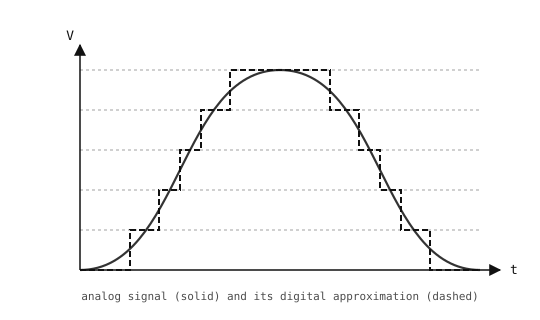

3.12. Analogisignaalin lukeminen ADC:llä¶
Tähän asti kamera on lukenut digitaalisia signaaleja – nasta on joko 0 tai 1, kytkin on auki tai kiinni. Useimmat reaalimaailman sensoreilta tulevat signaalit ovat analogisia: jatkuva jännite, joka vaihtelee tasaisesti jollakin alueella. Valovastus käy läpi jokaisen jännitteen kiskojen välillä ympäristön kirkkauden muuttuessa. Lämpötila-anturin lähtö ajautuu muutaman millivoltin huoneen lämmetessä. Mikrofonin lähtö nousee ja laskee ympärillä olevan äänen mukaan.
Analogia-digitaalimuunnin (ADC) on silta näiden välillä. Se näytteistää nastan jännitteen ja palauttaa kokonaisluvun, jonka Python voi lukea kuten minkä tahansa muunkin arvon.
3.12.1. Kvantisointi¶
Digitaalinen arvo ei voi esittää jatkuvaa jännitettä tarkasti. ADC:n tehtävä on kvantisoida – pyöristää jokainen näyte lähimpään kiinteästä joukosta tasoja. N-bittisessä ADC:ssä on 2^N tasoa; 12-bittisessä muuntimessa niitä on 4096 jaettuna sen tuloalueelle.

Kvantisointi: jokainen analogiasignaalin näyte (yhtenäinen viiva) pyöristetään yhteen äärellisestä joukosta digitaalisia tasoja (porrastettu katkoviiva).¶
Kahden vierekkäisen tason välinen jännite on ADC:n askelkoko; mikä tahansa sitä pienempi häviää pyöristykseen. 12-bittisellä ADC:llä 3,3 V:n alueella askelkoko on noin 3.3 / 4096 ≈ 0.8 mV – riittävän hieno, jotta useimmat signaalit näyttävät ohjelmistossa käytännössä jatkuvilta.
3.12.2. machine.ADC-luokka¶
machine.ADC kapseloi yhden analogisen tulokanavan. Luo se nastalla, jonka haluat lukea, ja kutsu sitten read_u16():
from machine import ADC
adc = ADC("P6")
value = adc.read_u16()
print(value)
read_u16() palauttaa aina etumerkittömän 16-bittisen kokonaisluvun väliltä 0 ja 65535. ADC:n natiivi resoluutio vaihtelee kortin mukaan (12-bittinen STM32:ssa, muualla porttikohtainen); tulos kohdistetaan vasemmalle 16 bittiin, joten laitteistoyksityiskohta ei vuoda Pythoniin – arvo 65535 on täysi asteikko sirusta riippumatta.
Referenssijännite – tulo, joka vastaa täyttä asteikkoa – riippuu kortista. Tarkista arvo kamerallesi kohdasta OpenMV-kortit. Mikä tahansa referenssin yläpuolella oleva luetaan täydeksi asteikoksi (ja voi vaurioittaa nastaa, jos se ylittää absoluuttisen maksimitulojännitteen).
3.12.2.1. Lukemien muuntaminen jännitteeksi¶
Kuvaus lukemista jännitteeksi on lineaarinen, ja täyden asteikon lukemat kuvautuvat tarkalleen arvoon Vref:
voltage = counts × Vref / 65535
Koodissa:
VREF = 3.3 # cam-dependent; see the quickref
counts = adc.read_u16()
voltage = counts * VREF / 65535
print(voltage, "V")
3.12.3. Jännitteenjakajat¶
Kaksi vastusta sarjassa jännitekiskon ja maan välillä muodostavat jännitteenjakajan. Niiden välinen solmu asettuu jännitteeseen, jonka kahden vastuksen suhde määrää:

Jännitteenjakaja: R1 ja R2 sarjassa skaalaavat Vin-arvon alas arvoksi V_out.¶
V_out = Vin × R2 / (R1 + R2)
Yhtä suuret vastukset antavat puolet kiskon jännitteestä; kun R2 on paljon pienempi kuin R1, haaroituskohta on lähellä maata; kun R2 on paljon suurempi, se on lähellä kiskoa.
Kaava olettaa, ettei mikään muu ota merkittävää virtaa kohdasta V_out. ADC-nasta on korkeaimpedanssinen (megaohmeja, nanoampeereja) ja täyttää tämän helposti, joten ADC:tä syöttävä jakaja käyttäytyy kaavan ennustamalla tavalla.
3.12.4. Potentiometrit¶
Potentiometri on yksittäinen fyysinen komponentti, joka on juuri jännitteenjakaja, jossa liukuva liukukosketin siirtää haaroituskohtaa kahden pään välillä. Nuppia kääntämällä muutetaan R1- ja R2-arvoja yhdessä pitäen niiden summa (potentiometrin kokonaisresistanssi) vakiona.

Potentiometri kytkettynä manuaaliseksi jännitelähteeksi ADC:lle: 3,3 V toisessa päässä, maa toisessa, liukukosketin nastaan.¶
Potentiometri on perinteinen syöttölaite ADC:n kokeilemiseen. Kytke toinen pää kohtaan 3.3 V, toinen maahan ja liukukosketin ADC-kelpoiseen nastaan; nuppia kääntämällä liukukosketin pyyhkii läpi jokaisen jännitteen kiskojen välillä.
import time
from machine import ADC
pot = ADC("P6")
VREF = 3.3
while True:
counts = pot.read_u16()
voltage = counts * VREF / 65535
print(voltage, "V")
time.sleep_ms(100)
3.12.5. Korkeampien jännitteiden lukeminen jakajalla¶
Vref-arvon yläpuolella oleva jännite kiinnittää ADC:n täyteen asteikkoon ja voi vaurioittaa tuloa, jos se ylittää absoluuttisen maksimiarvon. Korkeamman lähteen lukemiseksi – akku, sensorin lähtö, joka ulottuu Vref-arvon yli – skaalaa se alas kiinteällä jännitteenjakajalla ennen kuin se saavuttaa nastan:

Korkeajännitelähteen skaalaaminen ADC:lle sopivaksi: R1 ja R2 muodostavat kiinteän jännitteenjakajan, jonka haaroituskohta syöttää ADC-nastaa.¶
Valitse R1 ja R2 niin, että jaettu jännite pysyy ADC:n alueen sisällä suurimmalla odottamallasi tulojännitteellä:
V_adc = V_in × R2 / (R1 + R2)
Suurimmalle arvolle V_in = 12 V ja 3,3 V:n referenssille suhteen R2 / (R1 + R2) on oltava enintään 3.3 / 12 ≈ 0.275. Yleinen valinta hieman pelivaralla on R1 = 33 kΩ, R2 = 10 kΩ. Suhde on 10 / 43 ≈ 0.233, joten V_adc saavuttaa enimmillään noin 12 × 0.233 ≈ 2.79 V – turvallisesti Vref-arvon alapuolella.
Alkuperäisen V_in-arvon palauttamiseksi ADC-lukemasta käännä jakajan kaava:
V_in = V_adc × (R1 + R2) / R2
Koodissa:
from machine import ADC
R1 = 33_000
R2 = 10_000
VREF = 3.3
adc = ADC("P6")
counts = adc.read_u16()
v_adc = counts * VREF / 65535
v_in = v_adc * (R1 + R2) / R2
print(v_in, "V")
Muutamia käytännön huomioita:
Jakaja ottaa jatkuvasti
V_in / (R1 + R2). ArvoillaR1 + R2 = 43 kΩjaV_in = 12 Vse on noin 280 µA – yleensä mitätön, mutta jos lähde on akkukäyttöinen, harkitse suurempia vastuksia (100 kΩ:sta 1 MΩ:iin) lepovirran vähentämiseksi.Vastuksen toleranssi (tyypillisesti ±1 % tai ±5 %) vaikuttaa suoraan mittaustarkkuuteen. Kaksi ±5 %:n vastusta voivat aiheuttaa palautetulle
V_in-arvolle pahimmillaan noin ±10 %:n virheen.Jakajan lähdeimpedanssi yhdistyy hajakapasitanssin kanssa muodostaen tulolle alipäästösuodattimen. Nopeasti muuttuville signaaleille tällä on merkitystä; akun jännitteen tarkistukselle ei.